Genel Bilgiler
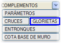ISTRAM®/ISPOL®, bir eksenin dönel kavşakla kesişimini BOYKESİT → YARDIMCI ARAÇLAR
→ DÖNEL KAVŞAKLAR menüsünden otomatik olarak hesaplama imkanı sunar.
Bu
seçenek seçildiğinde, bir eksenin dönel kavşakla bağlantısını, biri dönel kavşağa giriş diğeri ise çıkış için olmak üzere iki yeni eksene (kavşak koluna) ayrılmasıyla gerçekleştirmek için bir dizi parametrenin tanımlanmasına olanak tanıyan bir diyalog kutusu açılır:
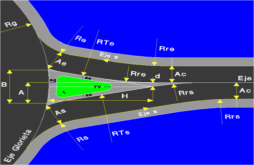
Bu algoritmanın uygulanması aşağıdaki hususları içerir:
- Rg yarıçaplı dönel kavşak ekseni, iç veya dış kenarından tanımlanmış olmalıdır.
- Dönel kavşak bağlantı verileri, kavşağa bağlanan veya ayrılan her eksen için doldurulmalı ve birbiriyle tutarlı olmalıdır, aksi takdirde geometrik bir çözüm bulunamayabilir.
- Dönel kavşağa bağlanan eksenler hem tek platformlu (banketsiz) hem de bölünmüş yol olabileceği gibi, aliyman (düz) veya kurplu da olabilir.
- Dönel kavşağa bağlanan eksenin kırmızı kotu (profili), dönel kavşak için tanımlananla uyumlu olmalıdır. Bu amaçla, DİĞER EKSENLER seçeneği ve dönel kavşağa bağlanan/ayrılan eksenin kırmızı kot tasarımı sırasında bunlara yapılan özel bağlantı oldukça faydalıdır.
- Eğer eksen, dönel kavşağın diğer ucundan devam ediyorsa, bu bağlantıyı gerçekleştirmek için başka bir parametre seti tanımlanmış olabilir. Bu nedenle her kesişim için, eksenin dönel kavşakla kesiştiği yaklaşık kilometre belirtilir.
- Dönel kavşak bağlantılarının hesaplanmasıyla ilgili olarak, kavşakların hesaplanması ile ilgili tüm hususlar dikkate alınmalıdır, çünkü işleyişleri benzerdir.
-
Kavşak kollarının kübajları da, konvansiyonel kavşaklarda olduğu gibi listelerde ayrıntılı olarak gösterilir. Dolayısıyla, görülebileceği gibi, konvansiyonel kavşaklar için yapılan hemen hemen tüm değerlendirmeler burada da geçerlidir. Bu otomatik kavşakların tüm bilgilerinin \CRZ klasöründe saklandığı da buna dahildir.
- Dönel kavşak olarak kullanılan eksen, herhangi bir açık eksen olabilir. Bu durumda, kavşak kollarının hangi tarafta olduğunu belirlemek için diyalog kutusundaki KM ile tanımlanan noktanın konumu kullanılır.
- Eğer
kavşak kolunun çıktığı eksende Yarma veya Dolguda Alternatif Tip Kesit tanımlanmışsa, bu Tip Kesit kavşak kolu ekseni tarafından miras alınır.
- Kavşak
kolunu tanımlayan eksende, kavşak kolu bölgesinde başlayan veya biten bir sanat yapısı tanımlanmışsa, artık kavşak kolu eksenlerinde iki hesap aralığı görünür: biri sanat yapısı bölgesinde, diğeri ise dolgu bölgesinde, her biri ilgili Tip Kesit ile birlikte.
- Kavşak
kollarının hesaplanmasından önce tanımlanmış olan sınır hatları, sınır hattında tanımlanan tarafa göre kesilir. Kavşak kolu ekseninin ana eksene göre ters yönde olması durumunda, kesme işleminin ters taraftan yapılacağı dikkate alınır. (DA ve DP kolları aynı tarafta, IA ve IP kolları ise ters tarafta).
Geometrik
Esaslar
Yukarıda belirtilen hususlar dikkate alındıktan ve parametreler doğru bir şekilde ayarlandıktan
sonra, program aşağıdaki şekilde çalışır:
1)
|
Her
iki eksen arasındaki kesişim noktası (nokta 1) bulunduktan sonra, dönel kavşağa
bu noktadan teğet olan bir doğru A mesafesine
kadar hesaplanır ve nokta 2 elde edilir.
A değerinin
amacı, bu nedenle, temel üçgenin veya referans üçgeninin B tabanını merkezden kaçırmaktır.
|
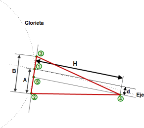
Temel
veya referans üçgeninin elde edilmesi
|
|
2)
|
Nokta 2'den ve dönel kavşağa
teğet aynı doğru üzerinde, B mesafesinde nokta 3 elde edilir.
|
|
3)
|
Nokta 1'den dönel kavşağa giren/çıkan eksene bir
teğet çizilir ve bu teğete paralel, H
uzunluğunda (temel üçgenin yüksekliği)
ve d mesafesinde bir çizgi
çizilerek nokta 4 elde edilir.
d parametresi, bu nedenle, temel
üçgenin tepe noktasını merkezden kaçırmak için kullanılır.
Üçgenin tabanını ve tepe noktasını aynı ölçüde merkezden kaçırmak isteniyorsa, 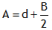 ilişkisi sağlanmalıdır, ki bu programın varsayılan olarak kabul ettiği değerdir.
A ve d
parametreleri, araçların dönel kavşaktan çıkış yörüngesini kolaylaştırmayı hedeflerken, kavşağa girenlerin hızlarını azaltarak girmelerini sağlamayı amaçlar.
|
|
4)
|
Nokta 5,
dönel kavşağa teğet doğru ile dönel kavşağa giriş/çıkış eksenine teğet olan doğrunun paraleli arasındaki kesişim noktasıdır ve referans
üçgeninin tabanının merkezine karşılık gelir.
|
|
5)
|
Önceki noktadan başlayarak, B taban ve H yükseklik
boyutlarına göre temel üçgen hesaplanır (kırmızı ile gösterilmiştir).
|
|
6)
|
Dönel kavşağın giriş (Ae)
ve çıkış (As) genişliklerine bağlı olarak referans üçgenine paralel çizgiler çizilir.
|
|
7)
|
Referans
üçgeninin kenarları, Rr yarıçaplı bir yay kullanılarak eksenle birleştirilir.
Benzer şekilde, bir önceki adımda hesaplanan paraleller de eksenin platform kenarlarıyla birleştirilir. Program bu
yarıçapları dönel kavşağa giriş (Rre)
veya çıkış (Rrs) olmasına göre ayırt eder.
|
|
8)
|
Aynı şekilde, referans
üçgenine paraleller, dönel kavşağa giriş için Re yarıçaplı
bir yay ve dönel kavşaktan çıkış için Rs yarıçaplı
başka bir yay ile dönel kavşakla birleştirilir.
|
|
9)
|
Böylece,
plan üzerinde kavşak kolları, dış kenarlarından tanımlanmış iki eksen olarak elde edilir.
|
|
10)
|
Program, her bir kavşak kolunun dönel kavşak ekseniyle
kesişim noktasındaki deveri okur ve bunu ilgili kavşak koluna (kırmızı oklar), şekilde gösterilen
aralıkta sabit olarak uygular. Böylece program, ce/cs parametresini kullanarak
(bu, dönel kavşak ile eksen arasındaki kırmızı kot geçişini gerçekleştirmek için bir dağıtım katsayısıdır) yeşil renkte çizilen
kırmızı kot parçasını türetebilir. 0.1 ile 0.9 arasında değerler kabul edilir, varsayılan
olarak bu değerler 0.5'tir. Geçiş iki parabol ile yapıldığında, 0.1 katsayısı, dönel
kavşak tarafındaki parabolün mevcut uzunluğun onda birini, diğer parabolün ise
kalan alanı kapladığı anlamına gelir.
Giriş ve çıkış eksenlerinin iç banket deveri, platform deverinin devamı şeklinde, dönel
kavşak alanına kadar korunur.
|
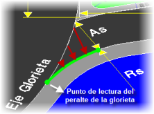
Dönel kavşak ve kavşak kolu arasında kırmızı kot ve deverlerin türetilmesi
|
|
11)
|
Ardından,
kavşak kolunun geri kalan kırmızı kotu, eksenden gelen kot ile
önceki adımda hesaplanan parça birleştirilerek ve hesaplanan geometrik çözüme
göre basit veya çift bir içbükey/dışbükey düşey kurp ile türetilir. Bu
aralıkta, ayrıca, eksenden bir önceki adımda elde edilen devere bir dever
geçişi yapar.
|
|
12)
13)
|
Son olarak, program modelden
anlaşılacağı üzere ae/as, RTe/RTs ve r/rv değerlerinden
yola çıkarak yönlendirme adasının geometrisini türetir. ag değeri
kullanıcı tarafından girilmez ve dönel kavşağın dış banketinin
genişliğine karşılık gelir.
Dönel kavşak kenarına, kavşak kolu ekseniyle teğet noktasında belirli mesafeler (dge ve dgs) tanımlamak mümkündür. Yani, kavşak kolu ekseni, dönel kavşağın 2 nolu koduna (platform dış kenarı) tanımlanan mesafedeki bir paralele teğet olarak başlar/biter. |
Kırmızı kot dağıtım katsayısı ce/cs:
-1 değeriyle, geçiş dönel kavşakla teğet noktasında başlar. Bu
durumda, dönel kavşağın deveri, iç kenarın dönel kavşakla kesişiminden
dış kenarın (kavşak kolu ekseni) dönel kavşakla teğet olduğu noktaya kadar
olan kavşak kolu bölgesinde artık korunmaz. Kırmızı kot
geçişi, kavşak kolu ekseninin dönel kavşakla teğet olduğu noktadan
itibaren başlar ve belirtilen bölgedeki tüm deverler yeniden hesaplanır.
Kavşak kollarının kırpılması: Bir Dönel Kavşağın kavşak kolu eksenleri, koda göre kırpma (sol taraf) bilgisi ile oluşturulur, böylece bu eksenler normal eksenler gibi kopyalanabilir ve ek sınır hatları gerektirmez.
Sonuçların
Önizlemesi
Bu veriler tanımlandıktan sonra,
[Eksenleri Hesapla] düğmesine basarak eksenlerin
geometrik çözümünü ve referans üçgenini önizlemek
mümkündür. Bu, projeyi hesaplamaya gerek kalmadan
mevcut eksen için çözümleri denemeye
olanak tanır. Düğmeye basıldığında ayrıca, İspanyol 3.1-IC Mart 2015 normunda belirtilen dönel kavşağa yaklaşım açısı da gösterilir.
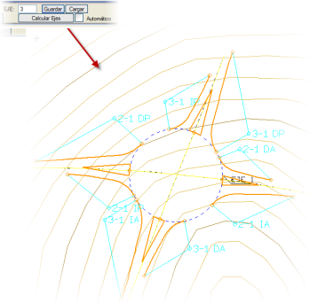
Ayrıca Otomatik kutucuğu işaretlenirse, geometrisini etkileyen parametrelerden herhangi biri değiştirildiğinde eksenler otomatik olarak yeniden hesaplanır.
Dönel kavşaklı bir proje hesaplandığında, çalışma klasöründe her bir dönel kavşak ekseni için, bir veya daha fazla eksenin bağlandığı bir Isglo_n.toc dosyası oluşturulur. Bu dosya, dönel kavşağa bağlanan her eksen için 4 nokta içerir:
- Giriş kavşak kolunun iç kenarının, dönel kavşağa bağlanan eksenden ayrıldığı nokta.
- Çıkış kavşak kolunun iç kenarının, dönel kavşağa bağlanan eksenden ayrıldığı nokta.
- Giriş kavşak kolunun iç kenarının, dönel kavşağı kestiği nokta.
- Çıkış kavşak kolunun iç kenarının, dönel kavşağı kestiği nokta.
Bu dosyalar, dönel kavşağın aplikasyon noktalarından oluşan bir pafta oluşturmak için Araçlar, Kotlar, NXYZ Koordinat Tablosu seçeneği tarafından kullanılabilir.
crz alt klasöründe ayrıca, projedeki tüm dönel kavşakların bu noktalarını içeren bir glo.top dosyası oluşturulur.
Eksenleri Hesapla aracını kullanmak için Proje'nin ENL kutucuğunu işaretlemek gerekli değildir.
Çalışma
Modları
Dönel kavşak bağlantısını tanımlamak için dört farklı mod bulunmaktadır:
Mod Sadece Parametreler
Temel olarak, kavşak kollarının giriş ve çıkış yarıçapları da dahil olmak üzere gerekli tüm geometrik parametrelerin tanımlanmasından oluşur.
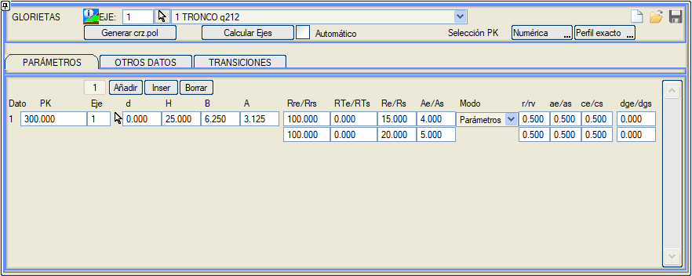
Bu modda, Eksenler modunda olduğu gibi, giriş ve çıkış eksenleri,
ana eksenin kırmızı kotunu ve deverini, iç kenarlarının ayrıldığı noktaya kadar korur. Bu mesafe: giriş ekseninin iç kenarından ae+rv ve çıkış ekseninin iç kenarından as+rv
kadar (yani, iç banket kenarına rv mesafesinde paralel iki çizginin kesişimine kadar).
Örnek
Daha fazla netlik için aşağıda bir dönel kavşak ve onu boydan boya kesen iki ek eksen içeren bir örnek geliştirilmiştir:
- İlk olarak, eksenler hazırlanır. Bu durumda, dairesel bir dönel kavşak (tip 5 aliyman) ve tek bir sabit aliymandan oluşan iki eksen söz konusudur; biri düz, diğeri -750 yarıçaplı:
- 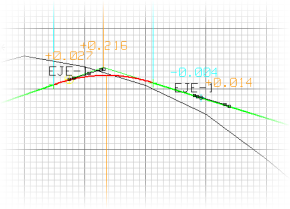Kırmızı kotlara gelince, dönel kavşağınki KIRMIZI KOT araçlarında bulunan DÖNEL KAVŞAK
seçeneği yardımıyla oluşturulabilir ve diğer iki eksen, DİĞER EKSENLER (dönel kavşakla kesişimi görmek için) yardımıyla ve dönel kavşağın izinden (veya en azından çok yakınından) geçirilerek tasarlanacaktır:
- Enkesit elemanları verilir (bu örnekte, dönel kavşak dış kenarından tanımlanmıştır, bu nedenle sağ tarafa sıfır genişlik verilmiştir).
- Her eksen için, BOYKESİT →
YARDIMCI ARAÇLAR → [DÖNEL KAVŞAKLAR] seçeneği seçildiğinde görünen diyalog kutusundaki veriler doldurulur.
Örneğin, ikinci eksen için aşağıdaki veriler girilmiştir:
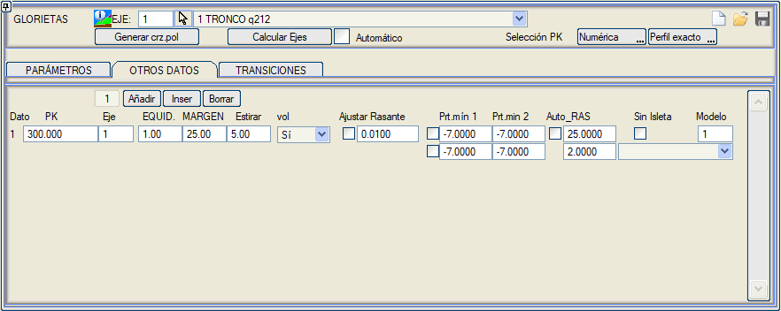
- Sonucu elde etmek için, her zamanki gibi, PROJE sekmesine gidilmeli ve orada, Kavşaklar kutucuğu ve ilgili hesaplama düğmeleri etkinleştirilmelidir:
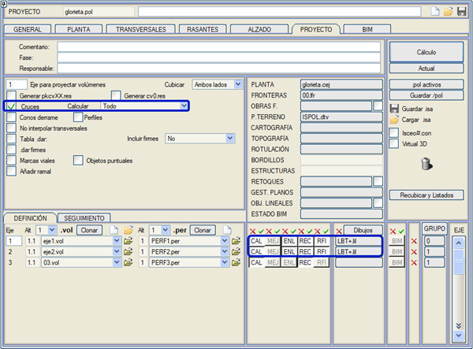
Kavşak kolları
alanında, ilgili eksenlerde C (hendekler), D (yarma), T
(dolgu) ve/veya V (sabit platform vektörleri,...) alt aralıklarına göre tip kesit
tanımlanmasına izin verilir. Ancak genel aralıklandırma kullanıldığında olduğu gibi,
kavşak kollarının teğet noktaları tip kesit geçiş bölgelerinde olmamalıdır.
- Elde edilen sonuç, aşağıda gösterilene benzer olmalıdır:
- 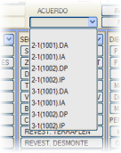Konvansiyonel kavşaklarda olduğu gibi,
kavşak kolu seviyesinde çalışmak mümkündür
(konvansiyonel kollardan ayırmak için, kol numarasına 1000 ekler).
- Böylece, kavşak kollarından biri yüklenip
kırmızı kotu görüntülendiğinde, dönel kavşağa yakın bölgede
türetilen parça parça bölüm ve bunun eksenin kırmızı kotuyla
çift içbükey-dışbükey bir düşey kurp ile nasıl birleştiği gözlemlenebilir:
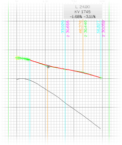
- Kübaj listeleri, ayrıştırılmış kavşak kolları ile birlikte, kavşaklar durumuna benzer:
Kavşak ve dönel kavşak kolları içeren projelerde, cvol.res,
cv.res ve cv.xlsx listeleri her bir kavşak kolunun adıyla oluşturulur, örneğin:
- cv_3-2(1004)_DP.xlsx : Eksen 3'ün 2 nolu eksenle olan, Eksen 3'ün 4. Dönel Kavşak verisinde tanımlanan Sağ_Arka Dönel Kavşak Kolu.
- cvol_5-7(2)_DA.res : Eksen 5'in 7 nolu eksenle olan, Eksen 5'in 2. Kavşak verisinde tanımlanan Sağ_Ön kavşak kolu.
cvol.res ve cv.res dosyaları, eksenler hesaplandığında ve yeniden kübaj yapıldığında oluşturulur; cv.xlsx için ise Listeler'de seçeneğin etkinleştirilmiş olması gerekir.
PROJE
: Otomatik dönel kavşak bağlantıları
EKSEN: 2: Eksen 2
====================================================
* * * KAVŞAK KOLLARININ METRAJLARI * * *
* * * Ortalama alanlar yöntemine göre kübaj * * *
====================================================
KM EKSEN
KOL MALZEME KISMİ HACİM MALZEME KISMİ HACİM
------------- --- --
--------------- ------------ --------------- ------------
76.000 1
DA
ÜSTYAPI
76.11
ZAYIF ZEMİN 53.27
YARMA_ZEMİN
125.17
BİTKİSEL 43.54
DOLGU 6.67
76.000 1
IA
ÜSTYAPI
126.37
ZAYIF ZEMİN 108.27
YARMA_ZEMİN
642.55
BİTKİSEL 88.59
126.000 1
DP
ÜSTYAPI
168.94
ZAYIF ZEMİN 139.96
BİTKİSEL
111.97
DOLGU 1118.90
126.000 1
IP
ÜSTYAPI
99.45
ZAYIF ZEMİN 67.85
YARMA_ZEMİN
0.05
BİTKİSEL 54.33
Bu
tür kavşaklarda, tanımlandığı eksen (dönel
kavşağı geçen eksen) sadece bir tarafında genişliğe sahipse, o zaman sadece
dönel kavşağın giriş veya çıkış kolu oluşturulur ve
yönlendirme adası oluşturulmaz.
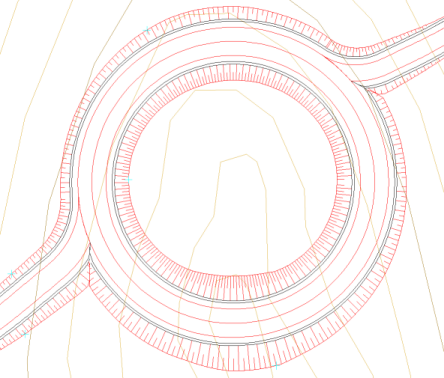
Mod
Tek Yarıçap
Bu mod, Sadece
Parametreler moduna benzer, ancak daha basittir, çünkü dönel
kavşağın giriş ve çıkış kollarını tek bir yarıçapla tanımlamaya olanak tanır (Re giriş yarıçapını ve Rs çıkış yarıçapını tanımlar):
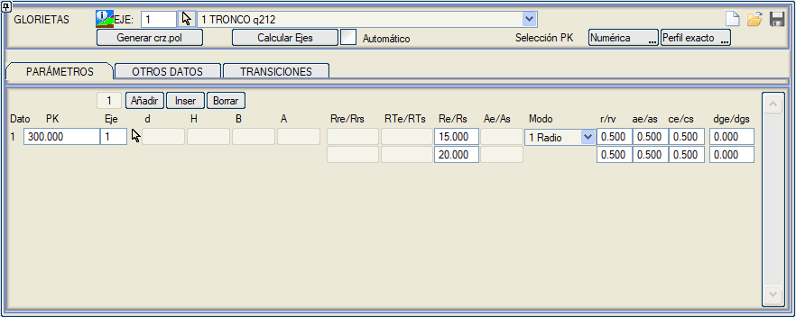
Mod Tek Yarıçap + Giriş ve
Çıkış Genişlikleri
Bu mod, Tek Yarıçap modu gibidir,
farkı ise kavşak kolu eksenlerinin genişliğinin
ana eksenin platform genişliğinden başlayarak dönel
kavşakla birleşimde giriş (Ae) veya
çıkış (As) genişliğine ulaşana kadar
değişmesidir:
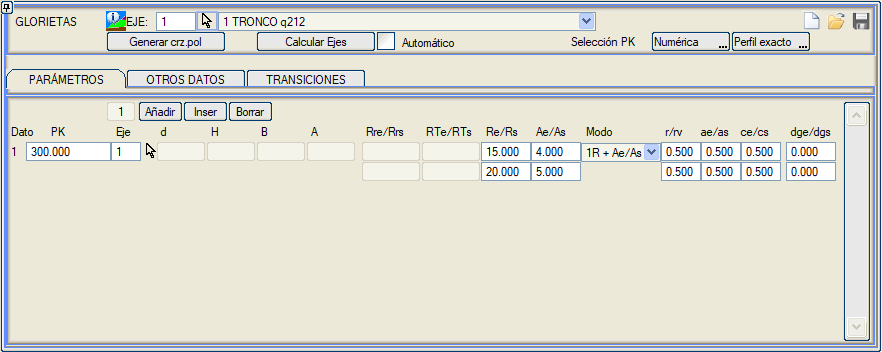
Mod Eksenler
Bu mod, kolları plandaki eksenler ve her birinin genişliğini tanımlayan
çizgiler aracılığıyla tanımlamaya olanak tanır. Plan eksenleri,
her eksen için bağımsız bir .cej
dosyasında tanımlanmalıdır:
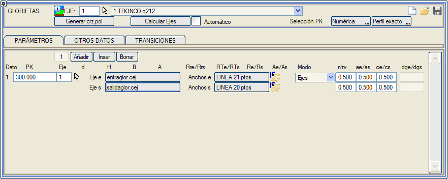
Aşağıdaki hususlar dikkate alınmalıdır:
- Giriş
ekseni, dönel kavşağa bağlanan veya ayrılan ana
eksenin platform kenarına teğet olarak başlamalı ve dönel
kavşağın platform kenarına teğet olarak bitmelidir.
- Çıkış
ekseni, dönel kavşağın platform kenarına teğet olarak
başlamalı ve dönel kavşağa bağlanan veya ayrılan eksenin
platform kenarına teğet olarak bitmelidir.
- Genişlikleri
tanımlayan çizgiler, adanın yanındaki iç kenarları belirler
ve bağlanan eksenin iki platformunun ayrılmaya başladığı noktadan, bu
kenarın dönel kavşağın platform kenarıyla kesişimine kadar uzanmalıdır.
- Kavşak
kolu eksenleri, ana eksenin kırmızı kotunu ve deverini, iç kenarlarının
ayrıldığı noktaya (genişlik çizgisinin başlangıcı) kadar korur.
- Sadece Parametreler modunda olduğu gibi, giriş ve çıkış eksenleri
ana eksenin kırmızı kotunu ve deverini, iç kenarlarının ayrıldığı noktaya kadar korur. Bu mesafe: giriş ekseninin iç kenarından ae+rv ve çıkış ekseninin iç kenarından as+rv
kadar (yani, iç banket kenarına rv mesafesinde paralel iki çizginin kesişimine kadar).
Mod Numaraya Göre Eksen
Eksenler moduna benzer, ancak .cej dosyalarının adlarını vermek yerine, kavşak kolu eksenleri numaralarıyla tanımlanır, bu da bu eksenlerin projenin .cej dosyasına ait olduğu anlamına gelir. Bu eksenler (etiketler veya bağlayıcılar aracılığıyla) referanslandırılabilir ve proje tablosunda hiçbir şeyle ilişkilendirilmemelidir (.vol, .per,...).
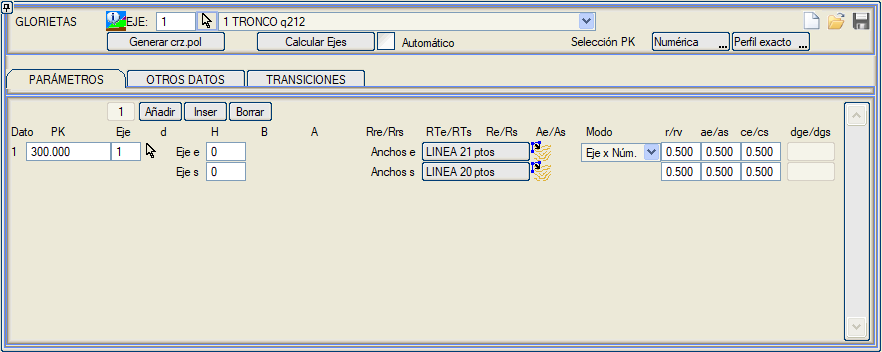
Diğer Veriler ve Seçenekler
Bir dizi parametre DİĞER VERİLER sekmesinde ayarlanabilir:
- Enkesit Aralığı: KAVŞAKLAR aracındaki gibi çalışır.
- Pay: KAVŞAKLAR aracındaki gibi çalışır,
bir detay hariç: bu değişkene 25 m'den büyük bir değer girersek, kavşak kolu ekseninin sol şevi ile
dönel kavşağın şevi arasındaki sınır hattı, şevlerin gerçek kesişimiyle
belirlenir (kesişimdeki platform kenarlarının açıortayı aracılığıyla
yapılmak yerine).
- Uzat: KAVŞAKLAR aracındaki gibi çalışır.
- .vol yeniden hesapla/koru: KAVŞAKLAR aracındaki gibi çalışır:
- HAYIR : Kavşak kolunun .vol dosyasına dokunulmaz (Mevcut değilse hariç).
- EVET : Kavşak kolunun .vol dosyası tamamen yeniden oluşturulur.
- K.Kotsuz : Eğer kavşak kolu zaten bir .vol dosyasına sahipse, kırmızı kota dokunulmaz ve geri kalanı (Deverler,...) yeniden oluşturulur.
Kullanıcının kavşak kolunun .vol dosyasında tanımladığı veya değiştirdiği kırmızı kotu sabitlemek için vol: K.Kotsuz
seçeneğini kullandığımızda, kavşak kollarının deverlerinin hesaplanması
yeni kırmızı kota uyarlanacak şekilde düzeltilir. Ayrıca, kavşak kolunun
.vol dosyasında, vol: Evet seçeneğiyle kullanılacak olan
teorik kırmızı kot olan yardımcı kırmızı kotun konumu da saklanır.
- Kırmızı kotu ayarla:
dönel kavşakla ve ana eksenle birleşimde oluşan poligon
kırmızı kot bölgelerini, izin verilen maksimum kot farkı toleransı (varsayılan
1 cm) verilerek parabollerle ayarlamaya olanak tanır.
- Minimum dever 1:
teğet noktasında dönel kavşaktan kopyalanan minimum dever.
Soldaki kutucuk işaretlenerek, bu
değerler bu noktalarda zorunlu dever değerleri olarak kullanılır, arada
doğrusal bir geçiş yapılır ve kırmızı kot, bu deverlerle
türetilen kotlarla hesaplanır.
- Minimum dever 2: iç kenarın dönel kavşakla kesişiminde dönel kavşaktan kopyalanan minimum dever.
- Oto_KOT:
eksen 1'in kırmızı kotunu eksen 0'a uyarlamak için değiştirir. Bitişikteki
metin kutusu, dönel kavşak kenarından eksene doğru bir geçiş uzunluğu
belirtmeye olanak tanır.
- Adasız:
kavşak kollarının tanımlandığı eksenin, kavşak kollarının deverlerinin
dayandığı bir çatı mahyası gibi kullanılmasına olanak tanır.
Bu şekilde, bu
bölümde kavşak kollarının deveri bir yandan ana
eksenin kotu, diğer yandan kavşak kolunun kırmızı kotu ile sabitlenir.
Bu seçenek Oto_KOT ile birlikte kullanılmalıdır.
- Model:
ada çizgilerinin oluşturulacağı modeli tanımlamaya olanak tanır.
Varsayılan olarak, tanımlandığı eksenin modeli alınır.
Herhangi bir zamanda [crz.pol Oluştur] düğmesine basarak dönel kavşağın .pol dosyasını oluşturabiliriz.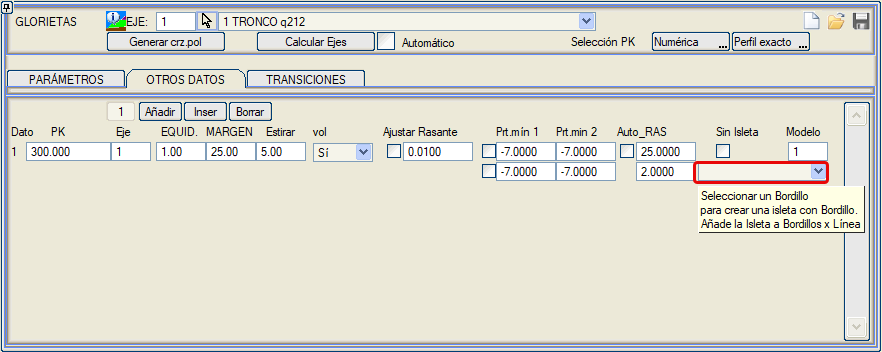
Ada için bir bordür eklendiğinde, bu bordür BIM'de oluşturulurken (çizgiye göre bordürler),
eğer bordürün çıkış kotu giriş kotundan yüksekse, adanın
içinde bordürün iç kenarını hizalayarak bir malzeme oluşturulur.
Bu seçenek, çizgiye göre bordürler diyalog kutusunda, [ADA] (Adanın içini oluştur) seçeneği ile devre dışı bırakılabilir. [ADA]
göründüğünde, bu bordürün kavşaklar hesaplanırken otomatik
olarak eklendiğini gösterir. Bu eksenin kavşakları yeniden hesaplanırsa,
[ADA] bordürleri hesaplanan yenileriyle değiştirilir.
Geçişler
Kavşak kollarındaki gibi, üstyapı, terasman ve seçilmiş malzeme için bir geçiş yapılıp yapılmayacağını,
sadece mevcut eksenden mi miras alınacağını yoksa sadece diğer eksenden (dönel kavşak) mi miras alınacağını tanımlamaya olanak tanır.
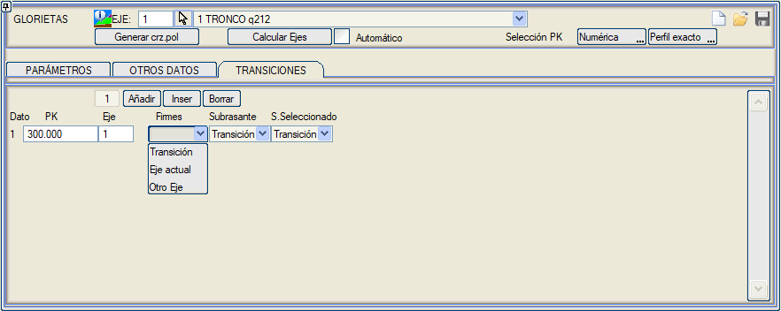
|